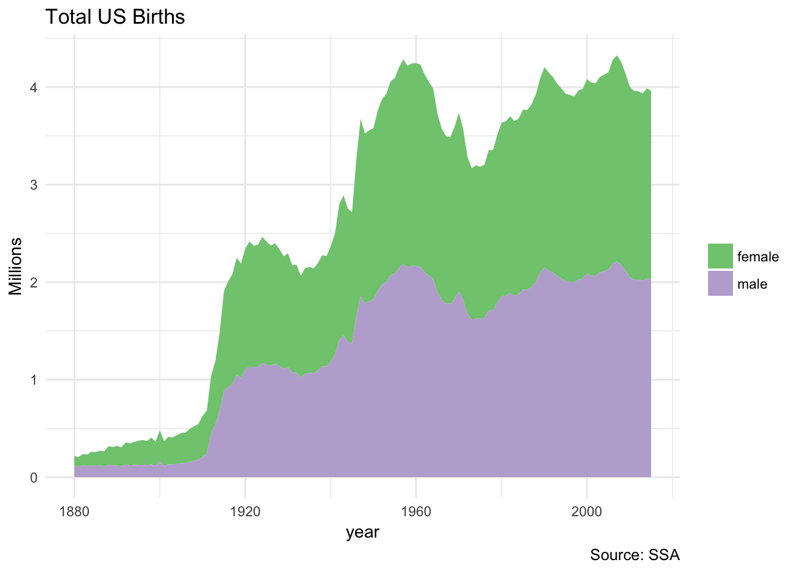
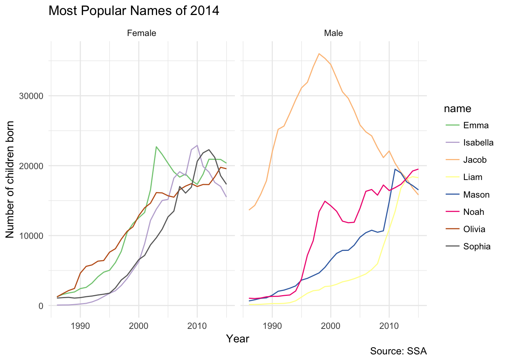
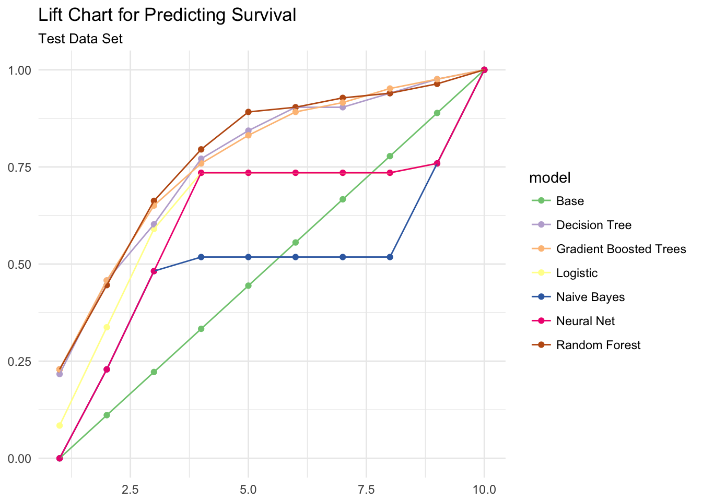
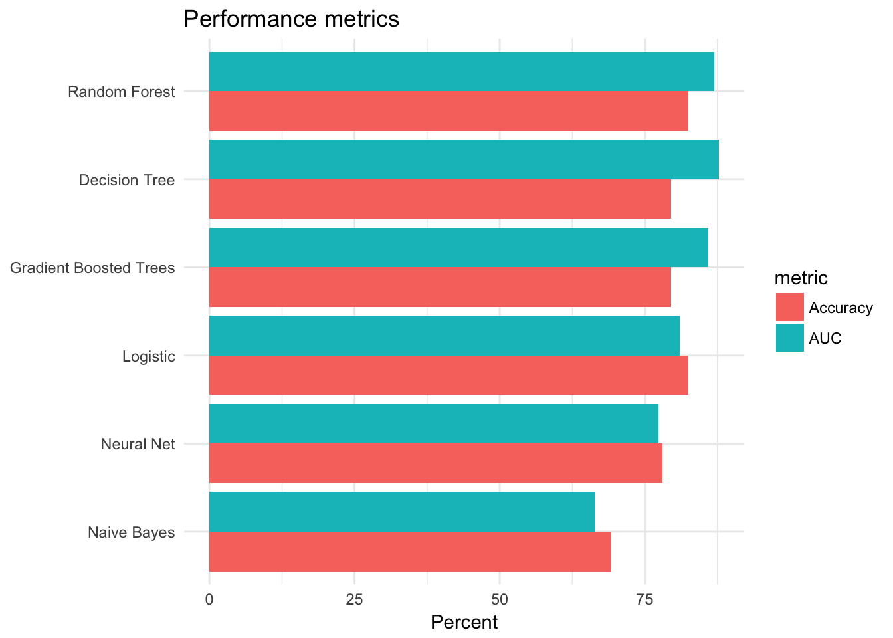
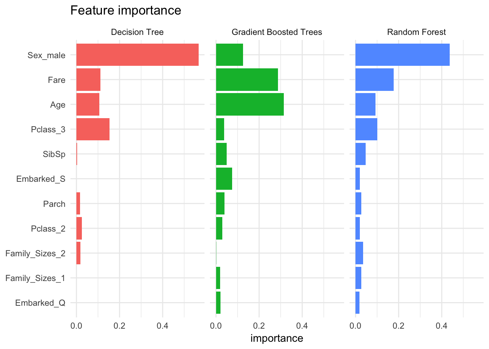
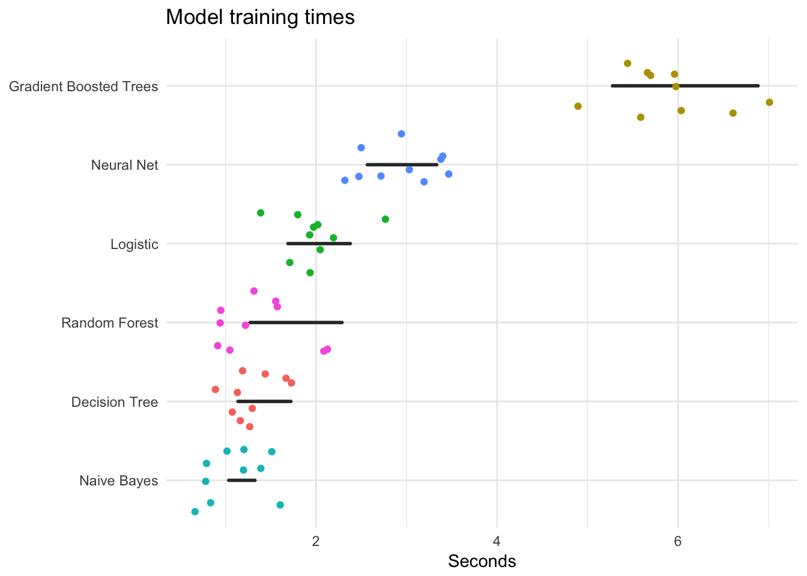

Spark and sparklyr
library(rsparkling)
library(sparklyr)
library(h2o)
library(tidyverse)
set.seed(1234)
theme_set(theme_minimal())Hadoop and Spark
Apache Hadoop is an open-source software library that enables distributed processing of large data sets across clusters of computers. It is highly scalable, in that can be loaded on a single server or spread across thousands of separate machines. It includes several modules including the Hadoop Distributed File System (HDFS) for distributed file storage, Hadoop MapReduce for parallel processing of large data sets, and Spark, a general engine for large-scale data processing, including statistical learning.
sparklyr
Learning to use Hadoop and Spark can be very complicated. They use their own programming language to specify functions and perform operations. In this class, we will interact with Spark through sparklyr, a package in R from the same authors of RStudio and the tidyverse. This allows us to:
- Connect to Spark from R using the
dplyrinterface - Interact with SQL databases stored on a Spark cluster
- Implement distributed statistical learning algorithms
See here for more detailed instructions for setting up and using sparklyr.
Installation
First you need to install sparklyr:
install.packages("sparklyr")You also need to install a local version of Spark to run it on your computer:
library(sparklyr)
spark_install(version = "2.1.0")Connecting to Spark
You can connect to both local instances of Spark as well as remote Spark clusters. Let’s use the spark_connect() function to connect to a local cluster built on our computer:
library(sparklyr)
sc <- spark_connect(master = "local")Reading data
You can copy R data frames into Spark using the dplyr::copy_to() function. Let’s prepare the Spark cluster by loading two data frames from the babynames package:
install.packages("babynames")library(babynames)
babynames_tbl <- copy_to(sc, babynames, "babynames", overwrite = TRUE)
applicants_tbl <- copy_to(sc, applicants, "applicants", overwrite = TRUE)
babynames_tbl## # Source: table<babynames> [?? x 5]
## # Database: spark_connection
## year sex name n prop
## <dbl> <chr> <chr> <int> <dbl>
## 1 1880. F Mary 7065 0.0724
## 2 1880. F Anna 2604 0.0267
## 3 1880. F Emma 2003 0.0205
## 4 1880. F Elizabeth 1939 0.0199
## 5 1880. F Minnie 1746 0.0179
## 6 1880. F Margaret 1578 0.0162
## 7 1880. F Ida 1472 0.0151
## 8 1880. F Alice 1414 0.0145
## 9 1880. F Bertha 1320 0.0135
## 10 1880. F Sarah 1288 0.0132
## # ... with more rowsapplicants_tbl## # Source: table<applicants> [?? x 3]
## # Database: spark_connection
## year sex n_all
## <int> <chr> <int>
## 1 1880 F 97604
## 2 1880 M 118399
## 3 1881 F 98855
## 4 1881 M 108282
## 5 1882 F 115696
## 6 1882 M 122031
## 7 1883 F 120059
## 8 1883 M 112478
## 9 1884 F 137586
## 10 1884 M 122739
## # ... with more rowsUsing dplyr
Interacting with a Spark database uses the same dplyr functions as you would with a data frame or SQL database. For example, let’s plot the total US births recorded from the Social Security Administration, by gender:
birthsYearly <- applicants_tbl %>%
mutate(sex = if_else(sex == "M", "male", "female"),
n_all = n_all / 1000000) %>%
collect()
ggplot(birthsYearly, aes(year, n_all, fill = sex)) +
geom_area(position = "stack") +
scale_fill_brewer(type = "qual") +
labs(title = "Total US Births",
y = "Millions",
fill = NULL,
caption = "Source: SSA")
Note that this code is extremely similar to if we ran it with a traditional data frame. The only difference is that we do not have to collect() the final table:
birthsYearly <- applicants %>%
mutate(sex = if_else(sex == "M", "male", "female"),
n_all = n_all / 1000000)
ggplot(birthsYearly, aes(year, n_all, fill = sex)) +
geom_area(position = "stack") +
scale_fill_brewer(type = "qual") +
labs(title = "Total US Births",
y = "Millions",
fill = NULL,
caption = "Source: SSA")
We can also use Spark and dplyr to create a lookup table. A lookup table summarizes some entity or relationship in a database; while it is not required to exist in the database schema, it can be useful to store these summary tables for easy access later. Here let’s create a lookup table that stores information on the top 1000 baby names since 1986:
(topNames_tbl <- babynames_tbl %>%
filter(year >= 1986) %>%
group_by(name, sex) %>%
summarize(count = as.numeric(sum(n))) %>%
filter(count > 1000) %>%
select(name, sex))## # Source: lazy query [?? x 2]
## # Database: spark_connection
## # Groups: name
## name sex
## <chr> <chr>
## 1 Jessica F
## 2 Ashley F
## 3 Jennifer F
## 4 Nicole F
## 5 Heather F
## 6 Elizabeth F
## 7 Megan F
## 8 Melissa F
## 9 Danielle F
## 10 Amy F
## # ... with more rows(filteredNames_tbl <- babynames_tbl %>%
filter(year >= 1986) %>%
inner_join(topNames_tbl))## # Source: lazy query [?? x 5]
## # Database: spark_connection
## year sex name n prop
## <dbl> <chr> <chr> <int> <dbl>
## 1 1998 F Aanya 5 2.580377e-06
## 2 1999 F Aanya 5 2.569595e-06
## 3 2000 F Aanya 7 3.509720e-06
## 4 2001 F Aanya 20 1.010320e-05
## 5 2002 F Aanya 20 1.013399e-05
## 6 2003 F Aanya 24 1.197048e-05
## 7 2004 F Aanya 39 1.934463e-05
## 8 2005 F Aanya 39 1.923544e-05
## 9 2006 F Aanya 92 4.405580e-05
## 10 2007 F Aanya 125 5.913224e-05
## # ... with more rows(yearlyNames_tbl <- filteredNames_tbl %>%
group_by(year, name, sex) %>%
summarize(count = as.numeric(sum(n))))## # Source: lazy query [?? x 4]
## # Database: spark_connection
## # Groups: year, name
## year name sex count
## <dbl> <chr> <chr> <dbl>
## 1 1986 Abagail F 23
## 2 1986 Abbi F 37
## 3 1987 Abbi F 40
## 4 1986 Abbygail F 7
## 5 2002 Addelyn F 12
## 6 1987 Addie F 101
## 7 1987 Addison F 43
## 8 1995 Addisyn F 5
## 9 1996 Addisyn F 6
## 10 1990 Addyson F 5
## # ... with more rowssdf_register(yearlyNames_tbl, "yearlyNames")## # Source: table<yearlyNames> [?? x 4]
## # Database: spark_connection
## year name sex count
## <dbl> <chr> <chr> <dbl>
## 1 1986 Abagail F 23
## 2 1986 Abbi F 37
## 3 1987 Abbi F 40
## 4 1986 Abbygail F 7
## 5 2002 Addelyn F 12
## 6 1987 Addie F 101
## 7 1987 Addison F 43
## 8 1995 Addisyn F 5
## 9 1996 Addisyn F 6
## 10 1990 Addyson F 5
## # ... with more rowsNotice the use of
inner_join()to createfilteredNames_tbl. This is a great use of a filtering join operation.
sdf_register() is necessary to add yearlyNames_tbl to the Spark cluster. Otherwise it only exists internally within the R session.
Now that we have our lookup table, we can use it to visualize the most popular baby names from specific years. For instance, here are the top 5 male and female names from 1986 and their popularity trend over time:
topNames1986_tbl <- yearlyNames_tbl %>%
filter(year == 1986) %>%
group_by(name, sex) %>%
summarize(count = sum(count)) %>%
group_by(sex) %>%
mutate(rank = min_rank(desc(count))) %>%
filter(rank < 5) %>%
arrange(sex, rank) %>%
select(name, sex, rank) %>%
sdf_register("topNames1986")
topNames1986Yearly <- yearlyNames_tbl %>%
inner_join(select(topNames1986_tbl, sex, name)) %>%
mutate(sex = if_else(sex == "M", "Male", "Female")) %>%
collect()
ggplot(topNames1986Yearly, aes(year, count, color = name)) +
facet_grid(~ sex) +
geom_line() +
scale_color_brewer(type = "qual") +
labs(title = "Most Popular Names of 1986",
x = "Year",
y = "Number of children born",
caption = "Source: SSA")
Now what about the most popular names from 2014? Because we already generated the lookup table, we can reuse the same code with just a couple of modifications:
topNames2014_tbl <- yearlyNames_tbl %>%
filter(year == 2014) %>%
group_by(name, sex) %>%
summarize(count = sum(count)) %>%
group_by(sex) %>%
mutate(rank = min_rank(desc(count))) %>%
filter(rank < 5) %>%
arrange(sex, rank) %>%
select(name, sex, rank) %>%
sdf_register("topNames2014")
topNames2014Yearly <- yearlyNames_tbl %>%
inner_join(select(topNames2014_tbl, sex, name)) %>%
mutate(sex = if_else(sex == "M", "Male", "Female")) %>%
collect()
ggplot(topNames2014Yearly, aes(year, count, color = name)) +
facet_grid(~ sex) +
geom_line() +
scale_color_brewer(type = "qual") +
labs(title = "Most Popular Names of 2014",
x = "Year",
y = "Number of children born",
caption = "Source: SSA")
There really isn’t much new here, so I’m not going to hammer this point home any further. Read Manipulating Data with dplyr for more information on Spark-specific examples of dplyr code.
Machine learning with Spark
You can use sparklyr to fit a wide range of machine learning algorithms in Apache Spark. Rather than using caret::train(), you use a set of ml_ functions depending on which algorithm you want to employ.
Load the data
Let’s continue using the Titanic dataset. First, load the titanic package, which contains the data files we have been using for past statistical learning exercises, into the local Spark cluster:
library(titanic)
(titanic_tbl <- copy_to(sc, titanic::titanic_train, "titanic", overwrite = TRUE))## # Source: table<titanic> [?? x 12]
## # Database: spark_connection
## PassengerId Survived Pclass Name Sex Age SibSp Parch Ticket Fare
## <int> <int> <int> <chr> <chr> <dbl> <int> <int> <chr> <dbl>
## 1 1 0 3 Braun… male 22. 1 0 A/5 2… 7.25
## 2 2 1 1 Cumin… fema… 38. 1 0 PC 17… 71.3
## 3 3 1 3 Heikk… fema… 26. 0 0 STON/… 7.92
## 4 4 1 1 Futre… fema… 35. 1 0 113803 53.1
## 5 5 0 3 Allen… male 35. 0 0 373450 8.05
## 6 6 0 3 Moran… male NaN 0 0 330877 8.46
## 7 7 0 1 McCar… male 54. 0 0 17463 51.9
## 8 8 0 3 Palss… male 2. 3 1 349909 21.1
## 9 9 1 3 Johns… fema… 27. 0 2 347742 11.1
## 10 10 1 2 Nasse… fema… 14. 1 0 237736 30.1
## # ... with more rows, and 2 more variables: Cabin <chr>, Embarked <chr>Tidy the data
You can use dplyr syntax to tidy and reshape data in Spark, as well as specialized functions from the Spark machine learning library.
Spark SQL transforms
These are feature transforms (aka mutating or filtering the columns/rows) using Spark SQL. This allows you to create new columns and modify existing columns while still employing the dplyr syntax. Here let’s modify 4 columns:
Family_Size- create number of siblings and parentsPclass- format passenger class as character not numericEmbarked- remove a small number of missing recordsAge- impute missing age with average age
We use sdf_register() at the end of the operation to store the table in the Spark cluster.
titanic2_tbl <- titanic_tbl %>%
mutate(Family_Size = SibSp + Parch + 1L) %>%
mutate(Pclass = as.character(Pclass)) %>%
filter(!is.na(Embarked)) %>%
mutate(Age = if_else(is.na(Age), mean(Age), Age)) %>%
sdf_register("titanic2")Spark ML transforms
Spark also includes several functions to transform features. We can access several of them directly through sparklyr. For instance, to transform Family_Sizes into bins, use ft_bucketizer(). Because this function comes from Spark, it is used within sdf_mutate(), not mutate().
titanic_final_tbl <- titanic2_tbl %>%
mutate(Family_Size = as.numeric(Family_size)) %>%
sdf_mutate(
Family_Sizes = ft_bucketizer(Family_Size, splits = c(1,2,5,12))
) %>%
mutate(Family_Sizes = as.character(as.integer(Family_Sizes))) %>%
sdf_register("titanic_final")
ft_bucketizer()is equivalent tocut()in R.
Train-validation split
Randomly partition the data into training/test sets.
# Partition the data
partition <- titanic_final_tbl %>%
mutate(Survived = as.numeric(Survived),
SibSp = as.numeric(SibSp),
Parch = as.numeric(Parch)) %>%
select(Survived, Pclass, Sex, Age, SibSp, Parch, Fare, Embarked, Family_Sizes) %>%
sdf_partition(train = 0.75, test = 0.25, seed = 1234)
# Create table references
train_tbl <- partition$train
test_tbl <- partition$testTrain the models
Spark ML includes several types of machine learning algorithms. We can use these algorithms to fit models using the training data, then evaluate model performance using the test data.
Logistic regression
# Model survival as a function of several predictors
ml_formula <- formula(Survived ~ Pclass + Sex + Age + SibSp +
Parch + Fare + Embarked + Family_Sizes)
# Train a logistic regression model
(ml_log <- ml_logistic_regression(train_tbl, ml_formula))## Call: Survived ~ Pclass_2 + Pclass_3 + Sex_male + Age + SibSp + Parch + Fare + Embarked_Q + Embarked_S + Family_Sizes_1 + Family_Sizes_2
##
## Coefficients:
## (Intercept) Pclass_2 Pclass_3 Sex_male Age
## 3.696483969 -1.102340720 -2.053772367 -2.786065613 -0.035430315
## SibSp Parch Fare Embarked_Q Embarked_S
## 0.158164571 0.457385475 0.002038998 0.214551594 -0.159123177
## Family_Sizes_1 Family_Sizes_2
## -0.306388170 -3.749909900Other machine learning algorithms
Run the same formula using the other machine learning algorithms. Notice that training times vary greatly between methods.
# Decision Tree
ml_dt <- ml_decision_tree(train_tbl, ml_formula)
# Random Forest
ml_rf <- ml_random_forest(train_tbl, ml_formula)
# Gradient Boosted Tree
ml_gbt <- ml_gradient_boosted_trees(train_tbl, ml_formula)
# Naive Bayes
ml_nb <- ml_naive_bayes(train_tbl, ml_formula)
# Neural Network
ml_nn <- ml_multilayer_perceptron(train_tbl, ml_formula, layers = c(11, 15, 2))Validation data
# Bundle the models into a single list object
ml_models <- list(
"Logistic" = ml_log,
"Decision Tree" = ml_dt,
"Random Forest" = ml_rf,
"Gradient Boosted Trees" = ml_gbt,
"Naive Bayes" = ml_nb,
"Neural Net" = ml_nn
)
# Create a function for scoring
score_test_data <- function(model, data = test_tbl){
pred <- sdf_predict(model, data)
select(pred, Survived, prediction)
}
# Score all the models
ml_score <- map(ml_models, score_test_data)Compare results
To pick the best model, compare the test set results by examining performance metrics: lift, accuracy, and area under the curve (AUC).
Model lift
Lift compares how well the model predicts survival compared to random guessing. The function below calculates the model lift for each scored decile in the test data.
# Lift function
calculate_lift <- function(scored_data) {
scored_data %>%
mutate(bin = ntile(desc(prediction), 10)) %>%
group_by(bin) %>%
summarize(count = sum(Survived)) %>%
mutate(prop = count / sum(count)) %>%
arrange(bin) %>%
mutate(prop = cumsum(prop)) %>%
select(-count) %>%
collect() %>%
as.data.frame()
}
# Initialize results
ml_gains <- data_frame(
bin = 1:10,
prop = seq(0, 1, len = 10),
model = "Base"
)
# Calculate lift
for(i in names(ml_score)){
ml_gains <- ml_score[[i]] %>%
calculate_lift %>%
mutate(model = i) %>%
bind_rows(ml_gains, .)
}
# Plot results
ggplot(ml_gains, aes(x = bin, y = prop, color = model)) +
geom_point() +
geom_line() +
scale_color_brewer(type = "qual") +
labs(title = "Lift Chart for Predicting Survival",
subtitle = "Test Data Set",
x = NULL,
y = NULL)
The lift chart suggests the tree-based models (random forest, gradient boosted trees, and decision tree) provide the best prediction.
Accuracy and AUC
Receiver operating characteristic (ROC) curves are graphical plots that illustrate the performance of a binary classifier. They visualize the relationship between the true positive rate (TPR) against the false positive rate (FPR).


The ideal model perfectly classifies all positive outcomes as true and all negative outcomes as false (i.e. TPR = 1 and FPR = 0). The line on the second graph is made by calculating predicted outcomes at different cutpoint thresholds (i.e. \(.1, .2, .5, .8\)) and connecting the dots. The diagonal line indicates expected true/false positive rates if you guessed at random. The area under the curve (AUC) summarizes how good the model is across these threshold points simultaneously. An area of 1 indicates that for any threshold value, the model always makes perfect preditions. This will almost never occur in real life. Good AUC values are between \(.6\) and \(.8\). While we cannot draw the ROC graph using Spark, we can extract the AUC values based on the predictions.
# Function for calculating accuracy
calc_accuracy <- function(data, cutpoint = 0.5){
data %>%
mutate(prediction = if_else(prediction > cutpoint, 1.0, 0.0)) %>%
ml_classification_eval("prediction", "Survived", "accuracy")
}
# Calculate AUC and accuracy
perf_metrics <- data_frame(
model = names(ml_score),
AUC = 100 * map_dbl(ml_score, ml_binary_classification_eval, "Survived", "prediction"),
Accuracy = 100 * map_dbl(ml_score, calc_accuracy)
)
perf_metrics## # A tibble: 6 x 3
## model AUC Accuracy
## <chr> <dbl> <dbl>
## 1 Logistic 81.00928 82.43902
## 2 Decision Tree 87.78392 79.51220
## 3 Random Forest 86.90500 82.43902
## 4 Gradient Boosted Trees 85.89769 79.51220
## 5 Naive Bayes 66.47738 69.26829
## 6 Neural Net 77.32076 78.04878# Plot results
gather(perf_metrics, metric, value, AUC, Accuracy) %>%
ggplot(aes(reorder(model, value), value, fill = metric)) +
geom_bar(stat = "identity", position = "dodge") +
coord_flip() +
labs(title = "Performance metrics",
x = NULL,
y = "Percent")
Overall it appears the tree-based models performed the best - they had the highest accuracy rates and AUC values.
Feature importance
It is also interesting to compare the features that were identified by each model as being important predictors for survival. The tree models implement feature importance metrics (a la randomForest::varImpPlot(). Sex, fare, and age are some of the most important features.
# Initialize results
feature_importance <- data_frame()
# Calculate feature importance
for(i in c("Decision Tree", "Random Forest", "Gradient Boosted Trees")){
feature_importance <- ml_tree_feature_importance(sc, ml_models[[i]]) %>%
mutate(Model = i) %>%
mutate(importance = as.numeric(levels(importance))[importance]) %>%
mutate(feature = as.character(feature)) %>%
rbind(feature_importance, .)
}
# Plot results
feature_importance %>%
ggplot(aes(reorder(feature, importance), importance, fill = Model)) +
facet_wrap(~Model) +
geom_bar(stat = "identity") +
coord_flip() +
labs(title = "Feature importance",
x = NULL) +
theme(legend.position = "none")
Compare run times
The time to train a model is important. Some algorithms are more complex than others, so sometimes you need to balance the trade-off between accuracy and efficiency. The following code evaluates each model n times and plots the results. Notice that gradient boosted trees and neural nets take considerably longer to train than the other methods.
# Number of reps per model
n <- 10
# Format model formula as character
format_as_character <- function(x){
x <- paste(deparse(x), collapse = "")
x <- gsub("\\s+", " ", paste(x, collapse = ""))
x
}
# Create model statements with timers
format_statements <- function(y){
y <- format_as_character(y[[".call"]])
y <- gsub('ml_formula', ml_formula_char, y)
y <- paste0("system.time(", y, ")")
y
}
# Convert model formula to character
ml_formula_char <- format_as_character(ml_formula)
# Create n replicates of each model statements with timers
all_statements <- map_chr(ml_models, format_statements) %>%
rep(., n) %>%
parse(text = .)
# Evaluate all model statements
res <- map(all_statements, eval)
# Compile results
result <- data_frame(model = rep(names(ml_models), n),
time = map_dbl(res, function(x){as.numeric(x["elapsed"])}))
# Plot
result %>%
ggplot(aes(time, reorder(model, time))) +
geom_boxplot() +
geom_jitter(width = 0.4, aes(color = model)) +
scale_color_discrete(guide = FALSE) +
labs(title = "Model training times",
x = "Seconds",
y = NULL)
Sparkling Water (H2O) and machine learning
Where’s the LOOCV? Where’s the \(k\)-fold cross validation? Well, sparklyr is still under development. It doesn’t allow you to do every single thing Spark can do. The functions we used above to estimate the models are part of Spark’s distributed machine learning library (MLlib). MLlib contains cross-validation functions - there just isn’t an interface to them in sparklyr yet.1 A real drag.
If you are serious about utilizing Spark and need cross-validation and other more robust machine learning tools, another option is H2O, an alternative open-source cross-platform machine learning software package. The rsparkling package provides functions to access H2O’s distributed machine learning functions via sparklyr. H2O has many of the same features as MLlib (if not more so through sparklyr), however implementing it is a bit more complicated. Hence we focused most our code above on MLlib algorithms.
H2O and logistic regression
As a quick demonstration, let’s estimate a logistic regression model with 10-fold CV using H2O. First we need to load some additional packages:
library(rsparkling)
library(h2o)We will reuse the previously modified Titanic table titanic_final_tbl. However to use it with H2O functions, we need to convert it to an H2O data frame:
titanic_h2o <- titanic_final_tbl %>%
mutate(Survived = as.numeric(Survived),
SibSp = as.numeric(SibSp),
Parch = as.numeric(Parch)) %>%
select(Survived, Pclass, Sex, Age, SibSp, Parch, Fare, Embarked, Family_Sizes) %>%
as_h2o_frame(sc, ., strict_version_check = FALSE)Next we can estimate the logistic regression model using h2o.glm().
- This function does not use a formula to pass in the indepenent and dependent variables; instead they are passed as character vector arguments to
xandy family = "binomial"- ensure we run logistic regression, not linear regression for continuous dependent variablestraining_frame- data frame containing the training set (here we use the entire data frame because we also use cross-validation)lambda_search = TRUE- argument for the optimizer function to calculate the parameter valuesnfolds = 10- estimate the model using 10-fold cross-validation
glm_model <- h2o.glm(x = c("Pclass", "Sex", "Age", "SibSp", "Parch",
"Fare", "Embarked", "Family_Sizes"),
y = "Survived",
family = "binomial",
training_frame = titanic_h2o,
lambda_search = TRUE,
nfolds = 10)##
|
| | 0%
|
|= | 1%
|
|======================== | 37%
|
|=================================================================| 100%glm_model## Model Details:
## ==============
##
## H2OBinomialModel: glm
## Model ID: GLM_model_R_1503421695031_1
## GLM Model: summary
## family link regularization
## 1 binomial logit Elastic Net (alpha = 0.5, lambda = 0.003129 )
## lambda_search
## 1 nlambda = 100, lambda.max = 0.248, lambda.min = 0.003129, lambda.1se = 0.03515
## number_of_predictors_total number_of_active_predictors
## 1 4 4
## number_of_iterations training_frame
## 1 68 frame_rdd_13566_a40ade0b999e58d83ef2c902891449bb
##
## Coefficients: glm coefficients
## names coefficients standardized_coefficients
## 1 Intercept -0.236119 -0.454621
## 2 Age -0.022417 -0.290716
## 3 SibSp -0.289895 -0.319958
## 4 Parch 0.101851 0.082169
## 5 Fare 0.017416 0.865539
##
## H2OBinomialMetrics: glm
## ** Reported on training data. **
##
## MSE: 0.2084469
## RMSE: 0.4565598
## LogLoss: 0.6122621
## Mean Per-Class Error: 0.3641755
## AUC: 0.7074815
## Gini: 0.414963
## R^2: 0.117433
## Residual Deviance: 1088.602
## AIC: 1098.602
##
## Confusion Matrix (vertical: actual; across: predicted) for F1-optimal threshold:
## 0 1 Error Rate
## 0 288 261 0.475410 =261/549
## 1 86 254 0.252941 =86/340
## Totals 374 515 0.390326 =347/889
##
## Maximum Metrics: Maximum metrics at their respective thresholds
## metric threshold value idx
## 1 max f1 0.322308 0.594152 268
## 2 max f2 0.172284 0.759268 395
## 3 max f0point5 0.400116 0.645032 173
## 4 max accuracy 0.400116 0.724409 173
## 5 max precision 0.999640 1.000000 0
## 6 max recall 0.172284 1.000000 395
## 7 max specificity 0.999640 1.000000 0
## 8 max absolute_mcc 0.399184 0.393883 174
## 9 max min_per_class_accuracy 0.346658 0.632353 236
## 10 max mean_per_class_accuracy 0.399184 0.677215 174
##
## Gains/Lift Table: Extract with `h2o.gainsLift(<model>, <data>)` or `h2o.gainsLift(<model>, valid=<T/F>, xval=<T/F>)`
##
## H2OBinomialMetrics: glm
## ** Reported on cross-validation data. **
## ** 10-fold cross-validation on training data (Metrics computed for combined holdout predictions) **
##
## MSE: 0.2108965
## RMSE: 0.4592347
## LogLoss: 0.6189053
## Mean Per-Class Error: 0.4220026
## AUC: 0.6925587
## Gini: 0.3851173
## R^2: 0.1070613
## Residual Deviance: 1100.414
## AIC: 1110.414
##
## Confusion Matrix (vertical: actual; across: predicted) for F1-optimal threshold:
## 0 1 Error Rate
## 0 147 402 0.732240 =402/549
## 1 38 302 0.111765 =38/340
## Totals 185 704 0.494938 =440/889
##
## Maximum Metrics: Maximum metrics at their respective thresholds
## metric threshold value idx
## 1 max f1 0.297723 0.578544 304
## 2 max f2 0.152770 0.757238 395
## 3 max f0point5 0.413114 0.625000 151
## 4 max accuracy 0.413114 0.713161 151
## 5 max precision 0.999707 1.000000 0
## 6 max recall 0.152770 1.000000 395
## 7 max specificity 0.999707 1.000000 0
## 8 max absolute_mcc 0.399255 0.368296 167
## 9 max min_per_class_accuracy 0.346688 0.623529 228
## 10 max mean_per_class_accuracy 0.392200 0.670556 173
##
## Gains/Lift Table: Extract with `h2o.gainsLift(<model>, <data>)` or `h2o.gainsLift(<model>, valid=<T/F>, xval=<T/F>)`
## Cross-Validation Metrics Summary:
## mean sd cv_1_valid cv_2_valid cv_3_valid
## accuracy 0.6500479 0.041881736 0.6363636 0.6091954 0.71428573
## auc 0.71170306 0.032053903 0.74575895 0.6638825 0.70077866
## err 0.3499521 0.041881736 0.36363637 0.3908046 0.2857143
## err_count 31.0 3.7549968 36.0 34.0 26.0
## f0point5 0.5726497 0.045476418 0.53505534 0.5106383 0.56213015
## cv_4_valid cv_5_valid cv_6_valid cv_7_valid cv_8_valid
## accuracy 0.55172414 0.6835443 0.682243 0.5833333 0.7582418
## auc 0.70297295 0.7615283 0.7119403 0.6064706 0.74852073
## err 0.44827586 0.3164557 0.317757 0.41666666 0.24175824
## err_count 39.0 25.0 34.0 35.0 22.0
## f0point5 0.542522 0.62211984 0.58189654 0.5252101 0.72192514
## cv_9_valid cv_10_valid
## accuracy 0.61904764 0.6625
## auc 0.719496 0.7556818
## err 0.3809524 0.3375
## err_count 32.0 27.0
## f0point5 0.5 0.625
##
## ---
## mean sd cv_1_valid cv_2_valid cv_3_valid
## precision 0.5381394 0.055250388 0.4915254 0.47058824 0.54285717
## r2 0.0975009 0.031127375 0.1564119 0.10831892 0.086596675
## recall 0.8112482 0.086222775 0.82857144 0.7741935 0.6551724
## residual_deviance 109.25886 5.4304786 114.6542 104.17874 106.71968
## rmse 0.45955113 0.008883104 0.4390905 0.45223105 0.44533285
## specificity 0.5446867 0.11514253 0.53125 0.51785713 0.7419355
## cv_4_valid cv_5_valid cv_6_valid cv_7_valid cv_8_valid
## precision 0.4868421 0.5869565 0.5625 0.49019608 0.7297297
## r2 0.1278114 0.09742886 0.13443607 0.027979773 0.121132664
## recall 1.0 0.8181818 0.675 0.7352941 0.6923077
## residual_deviance 108.03258 101.55076 128.32715 111.066345 112.77616
## rmse 0.4617127 0.46854305 0.45012507 0.48393032 0.46393192
## specificity 0.22 0.5869565 0.6865672 0.48 0.8076923
## cv_9_valid cv_10_valid
## precision 0.44642857 0.57377046
## r2 0.008515219 0.10637745
## recall 0.96153843 0.9722222
## residual_deviance 103.23352 102.049416
## rmse 0.46032485 0.4702888
## specificity 0.46551725 0.4090909We get lots of information back about the model. Many of these statistics can be extracted and stored as tidy data frames or used to create visualizations.
Acknowledgments
- Baby names and
dplyrexample drawn from Analysis of babynames withdplyr - Titanic machine learning example drawn from Comparison of ML Classifiers Using Sparklyr
Session Info
devtools::session_info()## setting value
## version R version 3.4.3 (2017-11-30)
## system x86_64, darwin15.6.0
## ui X11
## language (EN)
## collate en_US.UTF-8
## tz America/Chicago
## date 2018-04-24
##
## package * version date source
## assertthat 0.2.0 2017-04-11 CRAN (R 3.4.0)
## babynames * 0.3.0 2017-04-14 CRAN (R 3.4.0)
## backports 1.1.2 2017-12-13 CRAN (R 3.4.3)
## base * 3.4.3 2017-12-07 local
## base64enc 0.1-3 2015-07-28 CRAN (R 3.4.0)
## bindr 0.1.1 2018-03-13 CRAN (R 3.4.3)
## bindrcpp 0.2.2.9000 2018-04-08 Github (krlmlr/bindrcpp@bd5ae73)
## bitops 1.0-6 2013-08-17 CRAN (R 3.4.0)
## broom 0.4.4 2018-03-29 CRAN (R 3.4.3)
## cellranger 1.1.0 2016-07-27 CRAN (R 3.4.0)
## cli 1.0.0 2017-11-05 CRAN (R 3.4.2)
## colorspace 1.3-2 2016-12-14 CRAN (R 3.4.0)
## compiler 3.4.3 2017-12-07 local
## config 0.3 2018-03-27 CRAN (R 3.4.4)
## crayon 1.3.4 2017-10-03 Github (gaborcsardi/crayon@b5221ab)
## datasets * 3.4.3 2017-12-07 local
## DBI 0.8 2018-03-02 CRAN (R 3.4.3)
## dbplyr 1.2.1 2018-02-19 CRAN (R 3.4.3)
## devtools 1.13.5 2018-02-18 CRAN (R 3.4.3)
## digest 0.6.15 2018-01-28 CRAN (R 3.4.3)
## dplyr * 0.7.4.9003 2018-04-08 Github (tidyverse/dplyr@b7aaa95)
## evaluate 0.10.1 2017-06-24 CRAN (R 3.4.1)
## forcats * 0.3.0 2018-02-19 CRAN (R 3.4.3)
## foreign 0.8-69 2017-06-22 CRAN (R 3.4.3)
## ggplot2 * 2.2.1.9000 2018-04-24 Github (tidyverse/ggplot2@3c9c504)
## glue 1.2.0 2017-10-29 CRAN (R 3.4.2)
## graphics * 3.4.3 2017-12-07 local
## grDevices * 3.4.3 2017-12-07 local
## grid 3.4.3 2017-12-07 local
## gtable 0.2.0 2016-02-26 CRAN (R 3.4.0)
## h2o * 3.16.0.2 2017-12-01 CRAN (R 3.4.3)
## haven 1.1.1 2018-01-18 CRAN (R 3.4.3)
## hms 0.4.2 2018-03-10 CRAN (R 3.4.3)
## htmltools 0.3.6 2017-04-28 CRAN (R 3.4.0)
## httpuv 1.3.6.2 2018-03-02 CRAN (R 3.4.3)
## httr 1.3.1 2017-08-20 CRAN (R 3.4.1)
## jsonlite 1.5 2017-06-01 CRAN (R 3.4.0)
## knitr 1.20 2018-02-20 CRAN (R 3.4.3)
## lattice 0.20-35 2017-03-25 CRAN (R 3.4.3)
## lazyeval 0.2.1 2017-10-29 CRAN (R 3.4.2)
## lubridate 1.7.4 2018-04-11 CRAN (R 3.4.3)
## magrittr 1.5 2014-11-22 CRAN (R 3.4.0)
## memoise 1.1.0 2017-04-21 CRAN (R 3.4.0)
## methods * 3.4.3 2017-12-07 local
## mime 0.5 2016-07-07 CRAN (R 3.4.0)
## mnormt 1.5-5 2016-10-15 CRAN (R 3.4.0)
## modelr 0.1.1 2017-08-10 local
## munsell 0.4.3 2016-02-13 CRAN (R 3.4.0)
## nlme 3.1-137 2018-04-07 CRAN (R 3.4.4)
## openssl 1.0.1 2018-03-03 CRAN (R 3.4.3)
## parallel 3.4.3 2017-12-07 local
## pillar 1.2.1 2018-02-27 CRAN (R 3.4.3)
## pkgconfig 2.0.1 2017-03-21 CRAN (R 3.4.0)
## plyr 1.8.4 2016-06-08 CRAN (R 3.4.0)
## psych 1.8.3.3 2018-03-30 CRAN (R 3.4.4)
## purrr * 0.2.4 2017-10-18 CRAN (R 3.4.2)
## R6 2.2.2 2017-06-17 CRAN (R 3.4.0)
## rappdirs 0.3.1 2016-03-28 CRAN (R 3.4.0)
## Rcpp 0.12.16 2018-03-13 CRAN (R 3.4.4)
## RCurl 1.95-4.10 2018-01-04 CRAN (R 3.4.3)
## readr * 1.1.1 2017-05-16 CRAN (R 3.4.0)
## readxl 1.0.0 2017-04-18 CRAN (R 3.4.0)
## reshape2 1.4.3 2017-12-11 CRAN (R 3.4.3)
## rlang 0.2.0.9001 2018-04-24 Github (r-lib/rlang@82b2727)
## rmarkdown 1.9 2018-03-01 CRAN (R 3.4.3)
## rprojroot 1.3-2 2018-01-03 CRAN (R 3.4.3)
## rsparkling * 0.2.3 2018-03-08 CRAN (R 3.4.4)
## rstudioapi 0.7 2017-09-07 CRAN (R 3.4.1)
## rvest 0.3.2 2016-06-17 CRAN (R 3.4.0)
## scales 0.5.0.9000 2018-04-24 Github (hadley/scales@d767915)
## shiny 1.0.5 2017-08-23 cran (@1.0.5)
## sparklyr * 0.7.0 2018-01-23 CRAN (R 3.4.3)
## stats * 3.4.3 2017-12-07 local
## stringi 1.1.7 2018-03-12 CRAN (R 3.4.3)
## stringr * 1.3.0 2018-02-19 CRAN (R 3.4.3)
## tibble * 1.4.2 2018-01-22 CRAN (R 3.4.3)
## tidyr * 0.8.0 2018-01-29 CRAN (R 3.4.3)
## tidyselect 0.2.4 2018-02-26 CRAN (R 3.4.3)
## tidyverse * 1.2.1 2017-11-14 CRAN (R 3.4.2)
## titanic * 0.1.0 2015-08-31 CRAN (R 3.4.0)
## tools 3.4.3 2017-12-07 local
## utf8 1.1.3 2018-01-03 CRAN (R 3.4.3)
## utils * 3.4.3 2017-12-07 local
## withr 2.1.2 2018-04-24 Github (jimhester/withr@79d7b0d)
## xml2 1.2.0 2018-01-24 CRAN (R 3.4.3)
## xtable 1.8-2 2016-02-05 CRAN (R 3.4.0)
## yaml 2.1.18 2018-03-08 CRAN (R 3.4.4)In refresing my notes for the term, I saw CV was just incorporated into the development version of
sparklyrbut it is not yet deployed on CRAN.↩
This work is licensed under the CC BY-NC 4.0 Creative Commons License.